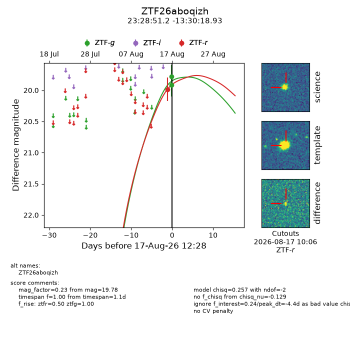
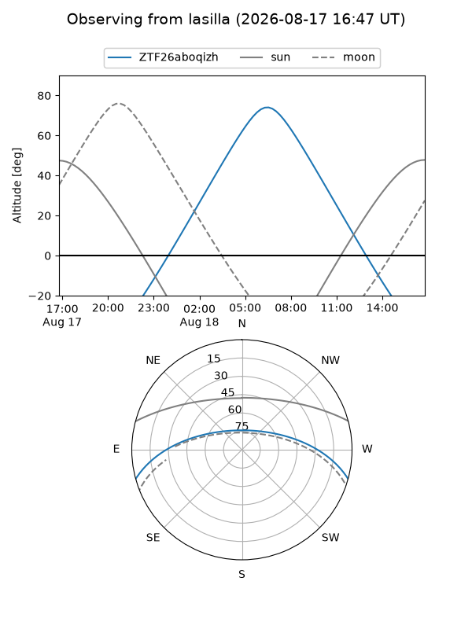
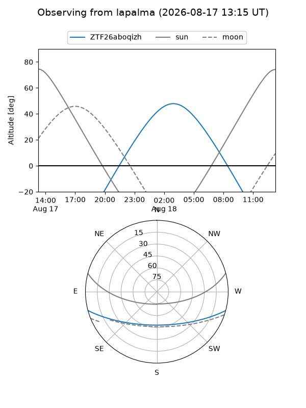
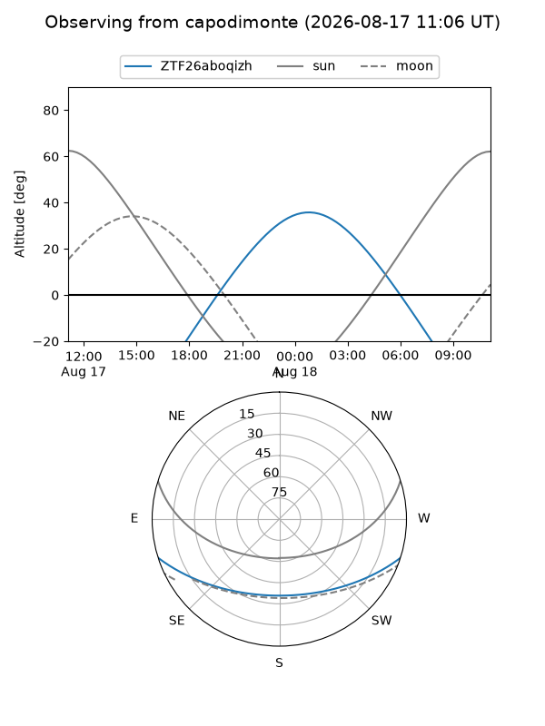
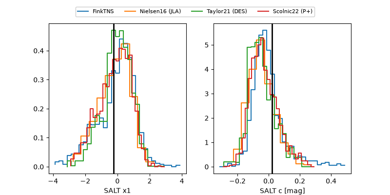

ZTF26aboqizh
Target ZTF26aboqizh at 2026-08-17 12:31
Aliases and brokers:
FINK-ZTF: ztf.fink-portal.org/ZTF26aboqizh
Lasair-ZTF: lasair-ztf.lsst.ac.uk/objects/ZTF26aboqizh
ALeRCE-ZTF: alerce.online/object/ZTF26aboqizh
Direct TNS query: direct search
alt names
ZTF26aboqizh (ztf,fink_ztf)
Coordinates:
equatorial (ra, dec) = 352.2132,-13.50526
equatorial (HMS+DMS) = 23:28:51.17,-13:30:18.93
galactic (l, b) = (64.0610,-66.38925)
Flags:
peak dt: -4.4
Photometry:
last ztfg=19.78, ztfr=19.98
2 ztfg, 1 ztfr detections
Lightcurve

Visibility



Additional plots
